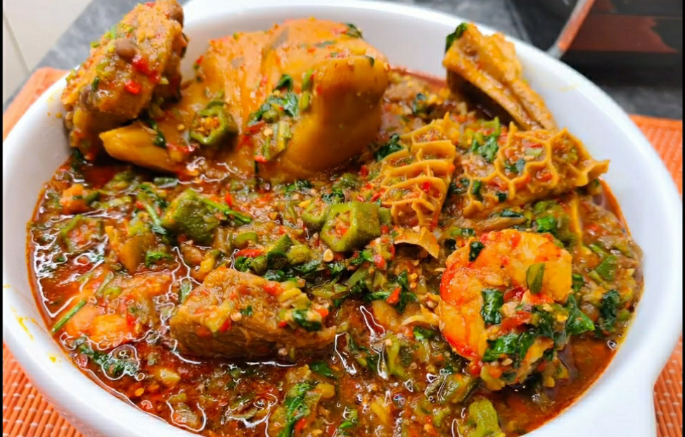

Okra Soup Recipe

Description
Nigerian Okra soup is simply a stewed okra soup recipe. It is a very popular delicacy among the Yoruba ethnic group of western Nigeria.
This loaded okro soup is a staple in West Africa, including Nigeria, Ghana, and Cameroon. Okra soup is deliciously satisfying, nutritious, and is loaded with proteins and healthy fat.
Ingredients
- 5 cups (250g) Okra
- 3 cooking spoons red palm oil
- Beef: Best cut
- Shaki (Cow Tripe) (Optional)
- Fish: Iced Fish (Mackerel/Titus), Dry Fish, Stock Fish
- 1 handful crayfish
- Pepper and Salt (to taste)
- Onions (optional)
- Vegetable: Nigerian pumpkin leaves or spinach (fresh or frozen)
- 3 stock/boullion cubes
Steps:
- If you will use shaki (cow tripe) for the soup, wash and boil till it is done. Add water sparingly because this soup needs to be thick. Add the soaked stockfish and dry fish to the cooked shaki. The length of time it will take to cook shaki depends on the cooking appliance utilized. You can take a bite to confirm this.
- When you are happy that the shaki and stock fish are well-done, add the beef, onions and stock cubes and cook till done. Then add the iced fish and cook till done.
- Pour red palm oil in another pot and heat the pot to dissolve the oil if it is congealed. Add the diced okra and start frying to kick-start the drawing process, add some meat stock from time to time till you notice the okra start to draw. This process should take a maximum of 5 mins to avoid over-cooking the okra.
- Now add the vegetable and stir well. Add all the meat and fish, crayfish, pepper and salt to taste. Then stir well.
- Cover the cooking pot and leave to simmer and it is ready to be served.